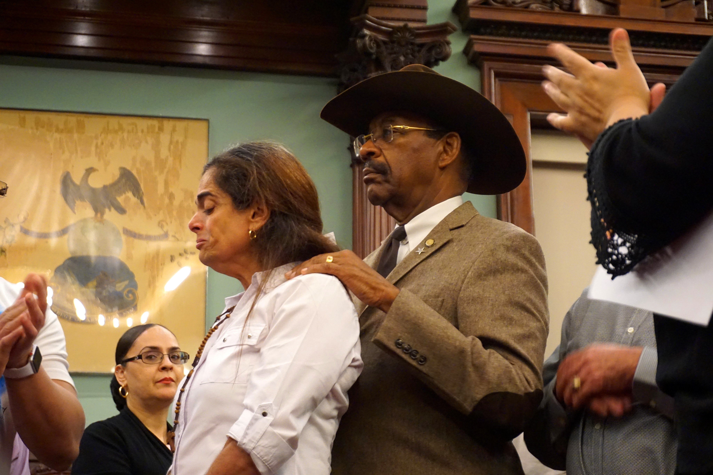

The New York City Council held a first-time event in its chamber today. A tribute was held for the late Lucas Yoaldy Silverio Mendoza, who interned at the Board of Standards and Appeals. The City will rename a street in the Bronx in the teenager’s honor, who died in June after trying to save a three-year-old girl from a fire in his building.
In order for the street name to be changed, a legal proclamation was issued today to make the decision part of the official record. The street, currently called Grote Street, is located at the intersection of Crotona Avenue, near the family’s old apartment and will be called Lucas Silverio Way.

South Bronx Councilmember Ruben Díaz Sr. comforts Ana Mercedes Mendoza during a City Hall tribute to her late teenage son, Lucas, while councilmembers applaud his bravery for trying to save a little girl from a fire. City Hall, Sept. 25, 2019 (Valentina Iricibar, NYC News Service).
“Thank you all for loving him, because he was my son,” said Ana Mercedes Mendoza in Spanish. She was in tears as a framed copy of the proclamation was presented to the family as a plaque. Members of the Council and the Board of Standards and Appeals comforted the family.
On June 9th, 2019, Mendoza hurried her son out of the shower as a fire raged through their building in Belmont, the Bronx. He left the apartment in just a towel. Silverio and his cousin were helping their grandmother down the stairs when he heard Yasleen McDonald’s cries. Making sure that his grandmother was safe, the 19-year-old rushed up 14 flights of stairs and carried Yasleen out of the building.
| NYC Borough |
FDNY response time (in minutes) |
| Bronx (4.36) |
|
| Queens (4.45) |
|
Staten Island (4.43) |
|
| Manhattan (4.39) |
|
| Brooklyn (4) |
|
Both the little girl and Silverio sustained burns on over 80 percent of their body. The three-year-old died on June 10th , and Silverio passed away on June 12th.
Jones is Records Specialist and Head of Internships at the Council. He was Silverio’s immediate supervisor for the 18 months of his internship.
“It’s personal. This whole agency took it hard because he was such a beautiful young man,” Jones said.
Silverio’s cousin Jesse Alvarez spoke during the tribute. He was wearing a white T-shirt emblazoned with his cousin’s haloed features, including his name and the dates of his birth and death. Alvarez also had a matching light blue pin.
“It’s surreal. I’m happy that people know his name, I’m happy people know he did the most selfless act a human being can do for another,” said Alvarez, who is a personal trainer, in an interview afterwards. “This is an amazing recognition from the City.”

Jesse Alvarez stands outside of City Hall, wearing a white T-shirt that honors his late cousin, Lucas Yoaldy Silverio Mendoza. He is wearing a matching pin. City Hall, Sept. 25, 2019 (Valentina Iricibar)
“I feel accomplished his story is being told. When he took his last breath, I decided that I’m not going to allow his death to be in vain. I’m going to fight to speak for him because he can no longer speak.”
Alvarez stressed the importance of a Go Fund Me page which has raised over $18,000 to help cover the family’s funeral costs and medical bills. Silverio’s cousin, aunt and grandmother were also injured in the fire; his parents, who are from the Dominican Republic, are seeking to move elsewhere.
“Neither of them is employed at the moment and are living with family, so we’re trying to help them out,” Alvarez said. “There’s no way they can go back to 725 Garden Street.”

Family members embrace Victor Silverio (left) and Ana Mercedes Mendoza (right) outside City Hall following the ceremony. City Hall, Sept. 25, 2019 (Valentina Iricibar)